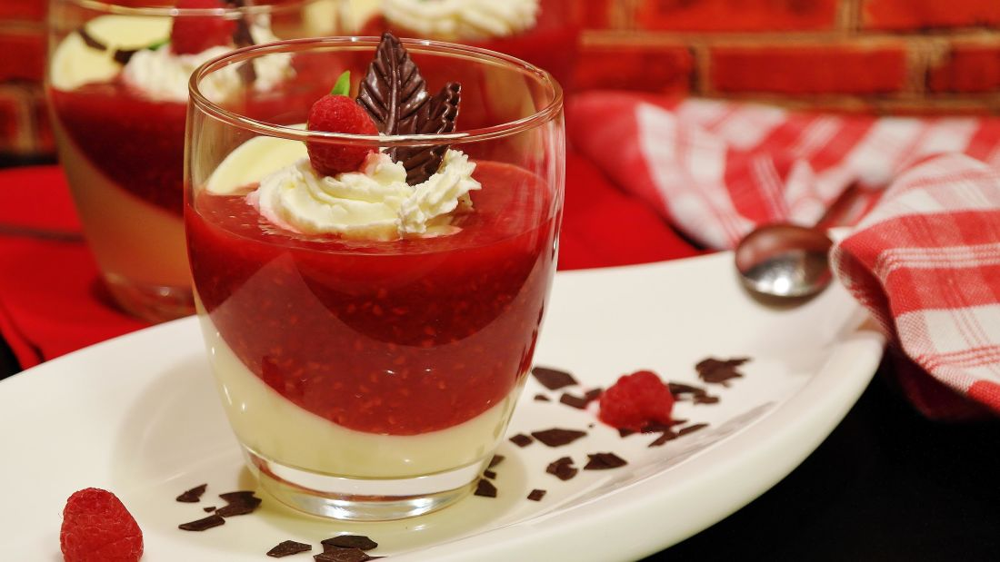
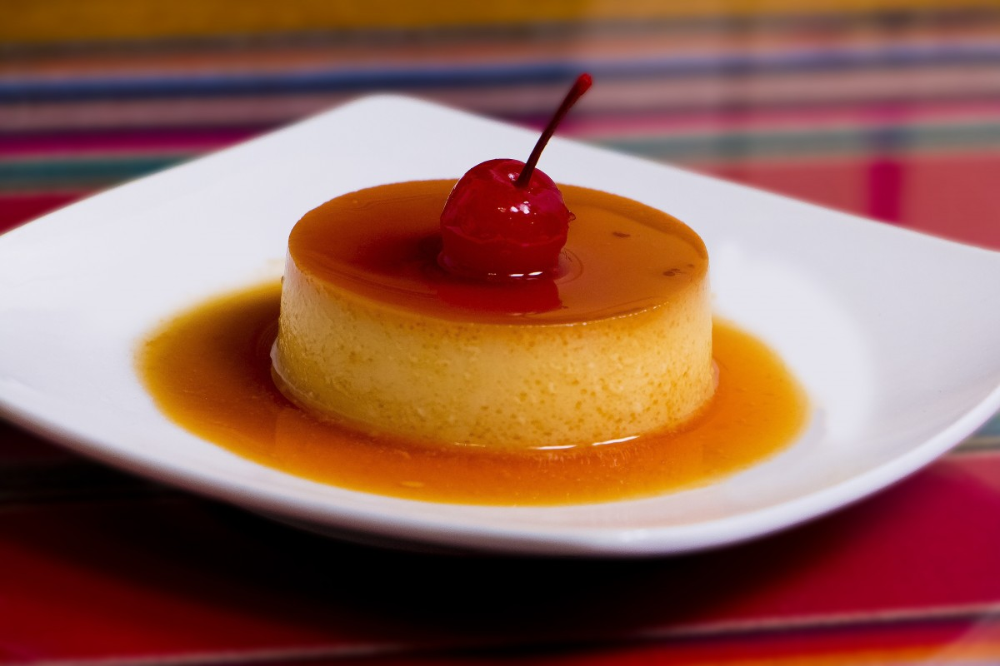
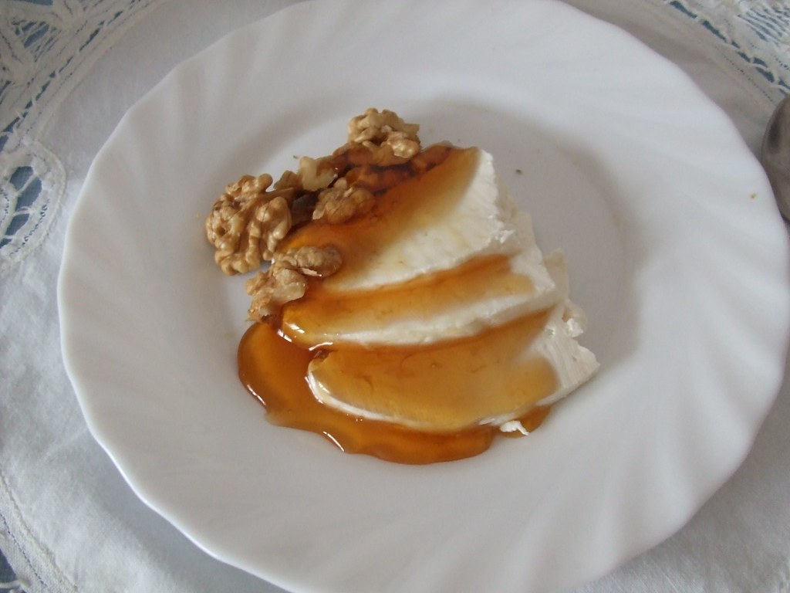
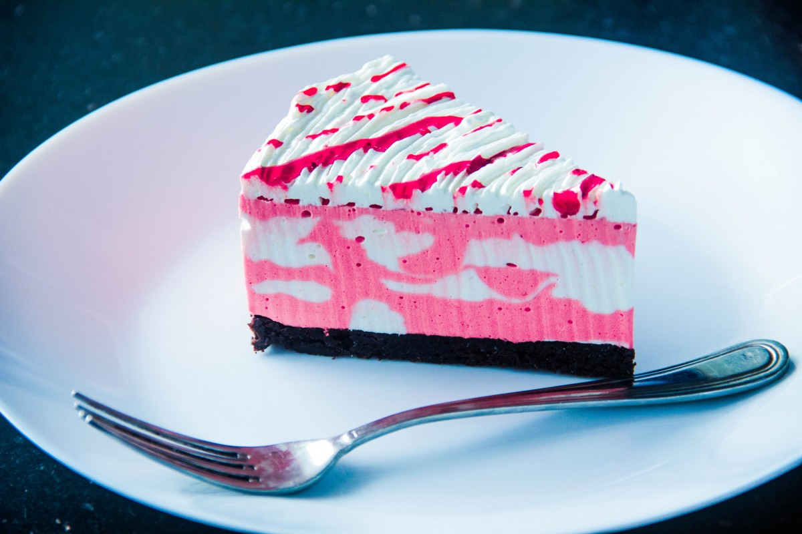
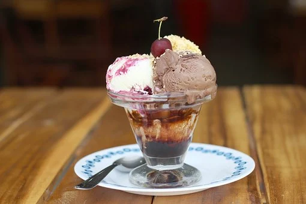

Endulza con nuestros POSTRES tu sobremesa.
| Plato | Ingredientes | Precio | Calorías | |
|  | Crema de yogur con fresas | Ingredientes | 2,50 € | 450 kcal |
|  | Pudin casero | Ingredientes | 2,50 € | 500 kcal |
|  | Queso fresco con miel y nueces | Ingredientes | 1,50 € | 250 kcal |
|  | Tarta marmol rosa | Ingredientes | 3,50 € | 600 kcal |
|  | Copa de helado de varios sabores | Ingredientes | 3 € | 600 kcal |